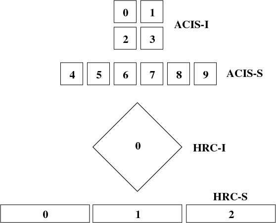

The marx tool suite¶
In addition to marx itself, the installation comes with with a selection of post-processing tools
that convert native marx binary output to other file formats.
In this section, we describe the purpose and calling sequences for the
various component tools in the marx suite. Detailed descriptions for individual tools follow
in alphabetical order. Brief usage instructions can be obtained for most
tools in the suite simply by typing the name of the tool followed by
return. Many of the executables take multi-character
parameters. These parameters are specified with a double-dash, i.e.
--chip. Optional parameters are enclosed in [ ].
Tool |
Description |
|---|---|
Converts marx output to SAOSAC DPDE format |
|
Converts marx output to a FITS events list |
|
Converts marx output to a FITS image |
|
Creates an aspect solution file for the marx internal dither model |
|
Concatenates the results of multiple marx simulations |
|
Folds a marx simulation through a FITS RMF file |
|
Simulates the effect of pileup in ACIS CCDs |
There is also a set of small scripts and helper programs. Most of those are executable files, but some
are written in a scripting language, such as IDL.
In order to use those users will need to configure their IDL environment so that
these routines are included in the search path. The IDL_PATH
environment variable provides a convenient way to accomplish this
configuration:
setenv IDL_PATH ".:+/path/to/your/marx/installation/tools/idl"
If a tool requires IDL or a similar environment, the individual tool will show the language in the listing below.
Tool |
Description |
|---|---|
Determines the best focus for a set of rays. |
|
Prints detector positional information used internally by marx. |
|
Prints the contents of a WFOLD scattering file. |
|
Prints the contents of a FITS file to the standard output. |
|
Calculates grating efficiency curves. |
|
Extract exact HETG spectra for a given simulation. |
|
Extract exact LETG spectra for a given simulation. |
|
Make an image from simulation variables. |
|
Convert an ISIS spectrum to a spectral input for marx |
|
Prints out parameter files in a readable format. |
|
Sets parameter values in a parameter file. |
|
Prints the current search path for parameter files. |
|
Read MARX binary vectors into IDL variables. |
|
Prints the contents of a FITS RMF file. |
|
Extract HETG/LETG spectra for a given simulation. |
|
Convert XSPEC ASCII files to MARX format. |
marx main program¶
- marx ([parameters] | --dump file | --raydump file |--version | --help )¶
Performs a Chandra raytrace simulation.
The marx tool comprises the central engine of the suite and actually performs the ray trace through the various components of the Chandra system. marx reads its inputs from an IRAF–style parameter file
marx.parthat is expected in the current directory. marx can also accept values for any of its parameters on the call line. This overrides values inmarx.parand is useful to run a grid of marx models from a script where only a few parameters change and the rest is taken frommarx.par.Detailed instructions for running marx are presented in Running marx simulations.
- Options:
parameters – Any marx parameter, e.g.
GratingType="HETG", see Marx Parameters.file – For dump options; filename to print
- --dump file
Prints the contents of a MARX binary vector
- --raydump file
Prints the contents of a MARX rayfile
- --version
Prints version information
- --help
Prints brief help information
The marx parameter files are plain text files and it should be easy to edit them in any text editor. If required, there is a detailed description of the format.
Example 1: Obtaining brief help information:
unix% marx --help MARX version 5.1.0, Copyright (C) 2002-2013 Massachusetts Institute of Technology This program uses an IRAF-style parameter file interface. It searches for the parameter file in the PFILES and UPARM directories. If one is not found, it will look in the current directory. The name of the parameter file that this program uses is marx.par. An alternative parameter file may be specified by prefixing the file name with "@@" and using the resulting expression as the first command line argument, e.g., program-name @@parameter-file-name. Parameters may be set on the command line via the syntax: PARAMETER-NAME=VALUE PARAMETER-NAME=VALUE ... The program will prompt for a parameter's value if VALUE is not specified, e.g., "PARAMETER-NAME=". Note that there must be no whitespace surrounding the '=' sign. See your program's user manual for more information. pfile library version: 2.41 marx usage forms: marx [parameters] marx --dump file... marx --raydump file marx --version marx --help unix%Example 2: Checking the version of your marx installation:
unix% marx --version MARX version 4.0.8, Copyright (C) 2002 Massachusetts Institute of Technology JDMATH library version: 1.81 PFILE library version: 2.32 JDFITS library version: 1.60 Supported Sources: POINT, GAUSS, LINE, BETA, RAYFILE, DISK, USER, SAOSAC, IMAGE Supported Detectors: ACIS-S, ACIS-I, HRC-S, HRC-I Other Features: HRMA Pitch/Yaw : yes Wfold Scattering : yes Drake Flat : yes Dynamic Linking : yes ACIS Streak : yes ACIS FEF Support : yes Dither Support : yes unix%Example 3: Creating an ASCII file from the photon energy list for a given simulation:
unix% marx --dump ./ngc1068/energy.dat > energy.out
Example 4: Running a simulation with a parameter file located elsewhere on your system:
unix% marx @@/home/wise/simulations/clusters/marx.par
Example 5: An example of setting parameters on the call line. This example runs a 50 ksec simulation of a point source as observed with the HETG and ACIS–S instruments:
unix% marx ExposureTime=50000 GratingType="HETG" \ DetectorType="ACIS-S" SourceType="POINT" unix%
Post–Processing Modules¶
The marx package currently includes 7 post–processing routines to
work with the contents of a marx output directory.
With the exceptions of the marxasp and marxpileup tools, each of these
routines will print a brief summary of their calling options if executed
with no parameters on the call line.
- marxasp [parameters] --help¶
Creates an aspect solution file for the marx internal dither model.
This tool will create an ASPSOL file which contains the aspect dither motion used in creating a marx simulation using the internal model. More details are given in Simulating Aspect with marx.
This ASPSOL file can be used in conjunction with the CIAO tool asphist to produce an aspect histogram file. This aspect histogram file is required by the CIAO tools mkarf and mkexpmap which may be used to realistically analyze the simulated marx data. Examples of such scientific analysis threads are given in Examples of MARX in use.
- Options:
OutputFile – (default:
sim_asol.fits) Output filenameMarxDir – (default:
point) Simulation Output DirectoryTimeDel – (default:
0.256) Aspect Sampling interval (sec). The default value of 0.256 sec corresponds to the standard value used in the CXC Aspect pipeline processing and should in general not be modified.RA_Sigma – (default:
0.12) RA Uncertainty sigma (arcsec). This parameter should generally stay on the default value.Dec_Sigma – (default:
0.12) Dec Uncertainty sigma (arcsec). This parameter should generally stay on the default value.Roll_Sigma – (default:
0.12) Roll Uncertainty sigma (arcsec). This parameter should generally stay on the default value.mode – (default:
hl) Mode for parameter file
- --help
Prints brief help information
Parameters can be given on the command line or in a parameter file like the one used in
marxitself. The parameter files are plain text files and it should be easy to edit them in any text editor. If required, there is a detailed description of the format.Example 1: Obtaining brief help information:
unix% marxasp --help This program uses an IRAF-style parameter file interface. It searches for the parameter file in the PFILES and UPARM directories. If one is not found, it will look in the current directory. The name of the parameter file that this program uses is marxasp.par. An alternative parameter file may be specified by prefixing the file name with "@@" and using the resulting expression as the first command line argument, e.g., program-name @@parameter-file-name. Parameters may be set on the command line via the syntax: PARAMETER-NAME=VALUE PARAMETER-NAME=VALUE ... The program will prompt for a parameter's value if VALUE is not specified, e.g., "PARAMETER-NAME=". Note that there must be no whitespace surrounding the '=' sign. See your program's user manual for more information. pfile library version: 2.11 unix%Example 2: Setting marxasp parameters on the call line:
unix% marxasp MarxDir='clust' OutputFile='sim_clust_asol.fits' TimeDel=0.1
Example 3: Running marxasp for a simulation which did not use the internal dither model:
unix% marxasp MarxDir='clust_noasp' *** This simulation did not use the INTERNAL dither model. Re-run the simulation with DitherModel=INTERNAL.
- marxcat [--help] DIR1 [DIR2 [DIR3 ...]] NEWDIR¶
Concatenates the results of multiple marx simulations.
The marxcat tool concatenates multiple marx simulation directories together. In this manner, users may build arbitrarily complex simulations, one component at a time and then merge them together to produce the final result (see Simulating two overlapping sources for a detailed example). Note, marxcat will overwrite the contents of the target directory if it already exists. If the directory does not exist, marxcat will create it. The marxcat tool works by merging the various binary output vectors contained in the indicated marx output directories. It is the user’s responsibility to ensure that the simulations being concatenated are commensurate. marxcat will compare the contents of the directories being merged and skip any files which do not have counterparts in all the directories. The
obs.parfile for the final, merged simulation will be copied from the first directory on the call line. If theobs.parfile is missing from the first directory, marxcat will abort with an error message. In principle, marxcat places no limits on the number of simulations which can be merged. However, in practice, UNIX places constraints on the system resources (filesize, number of open files, etc.) which a process may utilize. Users experiencing difficulty concatenating multiple simulations may need to override the default values set for these constraints using the UNIX commandunlimit. Similarly, the UNIX commandlimitcan be used to examine the current defaults.- Options:
DIR1...DIRN – Input simulation directories to merge
NEWDIR – Destination directory for the merged simulation
Example 1: Concatenating two MARX simulations:
[196]apocrypha% marxcat a2256_subclustA a2256_subclustB a2256_total Examining files in a2256_subclustA Examining files in a2256_subclustB Merging directories... Creating a2256_total/time.dat Creating a2256_total/energy.dat Creating a2256_total/xpos.dat Creating a2256_total/ypos.dat Creating a2256_total/zpos.dat Creating a2256_total/xcos.dat Creating a2256_total/ycos.dat Creating a2256_total/zcos.dat Creating a2256_total/pha.dat Creating a2256_total/detector.dat Creating a2256_total/xpixel.dat Creating a2256_total/ypixel.dat Creating a2256_total/mirror.dat Creating a2256_total/sky_ra.dat Creating a2256_total/sky_dec.dat Creating a2256_total/b_energy.dat unix%
Example 2: Example of error message generated by missing obs.par file:
unix% marxcat pointA pointB total Examining files in pointA Examining files in pointB Unable to open file pointA/obs.par for reading. unix%
- marx2dpde [ MARX-OUTPUT-DIR OUTPUT-FILE-NAME | -dump DPDE-FILE-NAME ]¶
Converts MARX output to SAOSAC DPDE format.
This2dpde tool converts the contents of a marx simulation output directory into a Mission Support Team DPDE format, SAOSAC compatible rayfile. Using marx2dpde, users can create rayfiles capable of being processed by the MST’s SAOSAC raytrace model. The connections between SAOSAC and MARX are described in more detail in Using marx with SAOSAC. Alternatively, the
--dumpoption may be used with marx2dpde to print out the contents of a DPDE file.- Options:
MARX-OUTPUT-DIR – Path to MARX simulation directory
OUPUT-FILE-NAME – Name of the DPDE file to create
DPDE-FILE-NAME – Name of the DPDE file to print
Example 1: Creating a DPDE format rayfile for further processing with SAOSAC:
unix% marx2dpde ./ngc1068 > ngc1068.dpde
Example 2: Dumping the contents of a binary DPDE format file to an ASCII file for examination:
unix% marx -dump AlShell1_B_focus.dpde > AlShell1_B_focus.out
- marx2fits [--help | --pileup | --pixadj=<OPTION> ] marx-dir fitsfile¶
Writes MARX output as a standard CXC Level 1 FITS events list.
This tool converts the contents of a marx simulation output directory into a FITS events binary table. Information about the simulation is written into the header. The resulting FITS binary table will contain entries for the “detected” event properties such as pulse height and arrival time as well “tracking” variables such as the photon’s true energy, absolute focal plane position, etc. The FITS files generated by marx2fits are standard CXC Level 1 events files. By default marx2fits operates on the standard output directories created by the marx executable.
- Options:
pileup – Set this flag (
--pileup) to convert the output of pileup into a FITS events file.pixadj –
This parameter selects the treatment of sub-pixel information for ACIS observations. Options are:
--pixadj="EDSER": Use a subpixel algorithm (default)--pixadj="RANDOMIZE": Randomize within a detector pixel--pixadj="NONE": Do not randomize within a detector pixel (all event positions located at pixel centers)--pixadj="EXACT": Use exact chip coordinates as simulated
Note that the first three options correspond exactly to the CIAO options
EDSER,RANDOMIZE, andNONE.EXACThas no equivalent when processing observed data, as the exact position within a pixel is not known for observed data. On the other hand, acis_process_events offers an optionCENTROIDwhich uses an alternative subpixel event repositioning algorithm toEDSER. This option is not implemented in marx2fits, because marx currently does not include a detector model with sufficient detail on the electron propagation in the CCD.marx-dir – Path to MARX simulation directory
fitsfile – Name of the FITS events file to create
Example 1: Converting the results of a typical marx run to a FITS binary events file
unix% marx ExposureTime=50000 GratingType="HETG" DetectorType="ACIS-S" SourceType="POINT" OutputDir="point" unix% marx2fits point point.fits
Example 2: Converting the results of a typical pileup run to a FITS binary events file.
unix% pileup MarxOutputDir="point" CCDID=7 FrameTime=3.3 > pileup.log unix% marx2fits --pileup point/CCD-7 point_3.3.fits
- marx2img [options] <MARXDIR> <FITSFILE>¶
Converts MARX output to FITS images.
Note
The use of this tool is deprecated. Instead,
marx2fitsshould be used to generate an event file, which can be converted into a image using standard CIAO tools like dmcopy. In this way, the header information of the resulting images matches real Chandra data much better.This tool converts the contents of a marx simulation output directory into a FITS image. By default, marx2img will use all detected photons to create the FITS image. Alternatively, users may screen the events used in the image by a set of option flags. Events may currently be screened on the basis of spatial position, photon energy, detector pulse height chan- nel, or time. The
--chipoption may be used to generate an image of a single chip. Pixel coordinates to marx2img are specified in “tiled detector” coordinates. Energy selections are specified in keV while detector energies (minD,maxD) are given in channels. Finally, time selection is in seconds. The--scaleoption will produce a FITS image with pixels binned by the indicated scale factor. Due to the large pixel area of the HRC–I (16000x16000) and the HRC–S (48000x3200), marx2img will by default use a scale factor of 8 when these detectors are selected. This default behavior may be overridden by the--scaleparameter.- Options:
MARXDIR – Path to MARX simulation directory
FITSFILE – Name of the FITS image file to create
Options include:
- --bbox
Find bounding box.
- --minX
<MIN_X_PIXEL>
- --maxX
<MAX_X_PIXEL>
- --minY
<MIN_Y_PIXEL>
- --maxY
<MAX_Y_PIXEL>
- --minE
<MIN_ENERGY> (KeV)
- --maxE
<MAX_ENERGY> (KeV)
- --minT
<MIN_TIME> (sec)
- --maxT
<MAX_TIME> (sec)
- --minD
<MIN_DETECTOR_ENERGY> (channel)
- --maxD
<MAX_DETECTOR_ENERGY> (channel)
- --chip
<CHIP_NUMBER>
- --scale
<PIXEL_SCALE_FACTOR>
Example 1: Creating a FITS image containing all detected photons for an ACIS–I simulation:
unix% marx2img ./clust clust_img.fits DetectorType: ACIS-I Pixel Size Scale Factor: 1 Num X Pixels: 1024 (per chip) Num Y Pixels: 1024 (per chip) First Chip Id: 0 Last Chip Id: 3 Min X Pixel: 3061 Max X Pixel: 5131 Min Y Pixel: 3061 Max Y Pixel: 5131 Estimated Image size: 17139600 73779 counts written to the fits file. unix%
Example 2: Creating a FITS image of all events between 0.8 and 1.2 keV for an ACIS–I simulation:
unix% marx2img --minE 0.8 --maxE 1.2 clust clust_img_feL.fits DetectorType: ACIS-I Pixel Size Scale Factor: 1 Num X Pixels: 1024 (per chip) Num Y Pixels: 1024 (per chip) First Chip Id: 0 Last Chip Id: 3 Min X Pixel: 3061 Max X Pixel: 5131 Min Y Pixel: 3061 Max Y Pixel: 5131 Min Energy: 0.800000 Max Energy: 1.200000 Estimated Image size: 17139600 27851 counts written to the fits file. unix%
Example 3: Creating a FITS image of the I3 frontside chip in the ACIS–I array:
unix% marx2img --chip 3 clust clust_img_i3.fits DetectorType: ACIS-I Pixel Size Scale Factor: 1 Num X Pixels: 1024 (per chip) Num Y Pixels: 1024 (per chip) First Chip Id: 3 Last Chip Id: 3 Min X Pixel: 4108 Max X Pixel: 5131 Min Y Pixel: 3061 Max Y Pixel: 4084 Estimated Image size: 4186116 33638 counts written to the fits file. unix%
Example 4: Creating a FITS image of an HRC–S simulation:
unix% marx2img ./ngc5548 DetectorType: HRC-S ngc5548.fits ***Note: Pixel scale factor not specified. Since the detector is HRC, a scale factor of 8 will be used. Set it to 1 via --scale for full resolution Pixel Size Scale Factor: 8 Num X Pixels: 512 (per chip) Num Y Pixels: 2048 (per chip) First Chip Id: 1 Last Chip Id: 3 Min X Pixel: 0 Max X Pixel: 511 Min Y Pixel: 0 Max Y Pixel: 6160 Estimated Image size: 12591040 93433 counts written to the fits file. unix%
- marxrsp [optional args] --rmf <rmf-file> --marx <marx-dir>¶
Folds a MARX simulation through a FITS RMF file.
This tool allows the user to fold the results of a marx simulation through a FITS response matrix file (RMF). Traditionally, RMF files are used to describe the response of a given detector such as an ACIS CCD. The RMF file, also known as a redistribution matrix file, describes the mapping of photon energy into detected pulse height. marxrsp reads the energy vector for a group of simulated events and uses the specified RMF file to calculate the appropriate pulse height values. By default, marx calculates a pulse height array (
pha.dat) for ACIS simulations using an approximate, built–in redistribution function. Processing a simulation directory with marxrsp will causepha.datto be overwritten. The original vector of PHA values is copied to a file namedpha.dat.bak. The use of marxrsp is discussed in more detail in Using Response Matrices with marx.The marxrsp tool was designed to be run with RMF files which by definition do not contain detector quantum efficiency (QE). The tool checks the value of the HDUCLAS3 FITS keyword which should have the value REDIST for an RMF file. The
--forceoption can be used to make marxrsp accept RMF files with other values of the HDUCLAS3 keyword. By default, marxrsp will process all events from the indicated simulation. Users may use the--chipoption to process only those events which were detected on a specific CCD. For finer control, the (xmin,xmax,ymin,ymax) options can be used to recompute only those events which were detected in a given (CHIPX,CHIPY) region.The required arguments are:
- --rmf-file
FITS RMF file to read
- --marx-dir
Path to MARX simulation directory
Optional arguments include:
- --chip
<ccdid> ID numbers are given here:
- --xmin
<min x pixel>
- --ymin
<min y pixel>
- --xmax
<max x pixel>
- --ymax
<max y pixel>
- --force
This option will allow the use of fits files that have the HDUCLAS3 keyword set to FULL. Keep in mind that such files already have the effective folded in, or are not up to spec.
Example 1: Fold all events from a simulation through a given RMF:
unix% marxrsp --rmf acis7_rmf.fits --marx ./ngc1399 unix%
Example 2: Recalculate all the PHA values for an HETG simulation using RMFs appropriate for each chip:
unix% marxrsp --chip 4 --rmf acis4_rmf.fits --marx ./ngc1399 unix% marxrsp --chip 5 --rmf acis5_rmf.fits --marx ./ngc1399 unix% marxrsp --chip 6 --rmf acis6_rmf.fits --marx ./ngc1399 unix% marxrsp --chip 7 --rmf acis7_rmf.fits --marx ./ngc1399 unix% marxrsp --chip 8 --rmf acis8_rmf.fits --marx ./ngc1399 unix% marxrsp --chip 9 --rmf acis9_rmf.fits --marx ./ngc1399
Example 3: Recompute only those events which were detected in a given (CHIPX,CHIPY) region. The command sequence:
unix% marxrsp --chip 7 --xmin 213 --xmax 313 --ymin 457 --ymax 557 --rmf acis7b_aim_pha_rmf.fits --marx therm/
would process only those events which were detected in a 100x100 pixel square centered on the aimpoint of CCD 7.
- marxpileup [parameters]¶
Simulates the effect of pileup in ACIS CCDs.
This tool allows users to simulate the effects of photon pileup in the ACIS CCDs and implements the pileup algorithm developed by John Davis (MIT). This same algorithm has been implemented into the ISIS, Sherpa, and XSPEC spectral fitting packages. The ACIS pileup model is statistical and is not an a priori photon-silicon interaction model which generates charge clouds and then PHAs per event “island”. The model is valid for on-axis point sources with low to moderate pileup. Users should interpret all results including the effects of pileup cautiously.
Like marx itself,
pileupuses a parameter file (which is calledpileup.parfor this tool) to control the processing. The parameter files are plain text files and it should be easy to edit them in any text editor. If required, there is a detailed description of the format.Alternatively, these parameters can be given as arguments on the command line. All relevant parameters for a typical pileup simulation and their default values are shown below. In general, none of these parameters will need to be adjusted for simulating standard Chandra observations. Using the pileup tool is discussed in detail in Simulating ACIS Pileup with marx.
- Options:
MarxOutputDir – (default:
point) MARX output directoryAlpha – (default:
0.5) Grade migration factorFrameTime – (default:
3.2) ACIS frame time (sec)FrameTransferTime – (default:
0.041) ACIS frame transfer time (sec)Verbose – (default:
2) Verbosity levelmode – (default:
hl) Mode for parameter file
Examples:
unix% marxpileup MarxOutputDir="point" Reading ACIS-I/S FEF File /usr/local/src/marx_4.0.8-dist/marx/data/caldb/acisfef.fits ***WARNING: Gaussian parameters appear invalid: a region with response <= 0 has been detected. ***WARNING: Gaussian parameters appear invalid: a region with response <= 0 has been detected. *** WARNING: One or more energies in region 2259 has an invalid response Opening point/b_energy.dat for read Opening point/time.dat for read Opening point/xpixel.dat for read Opening point/ypixel.dat for read Opening point/detector.dat for read Opening point/energy.dat for read Opening point/sky_ra.dat for read Opening point/sky_dec.dat for read 77733 input events available (across all CCDs) Opening point/pileup/chipx.dat for write Opening point/pileup/chipy.dat for write Opening point/pileup/time.dat for write Opening point/pileup/frame.dat for write Opening point/pileup/b_energy.dat for write Opening point/pileup/detector.dat for write Opening point/pileup/sky_ra.dat for write Opening point/pileup/sky_dec.dat for write Opening point/pileup/nphotons.dat for write Opening point/pileup/pha.dat for write Total Number Input: 77733 Total Number Detected: 4592 Efficiency: 5.907401e-02 unix%
Other scripts and helper programs¶
- bestfocus --dir MARX-DATA-DIR [--par parfile] [--order ORDER] [--grating TYPE]¶
Determines the best focus for a set of rays.
This tool reads the contents of a marx output directory and calculates the best focus position for the rays. It reports the current setting of the
DetOffsetXparameter as well as the recommended setting in order to achieve the best focus for the current simulation. For grating simulations, individual orders can be specified to optimize the focus for a given spectral order.- Language:
Unix executable
- --dir MARX-DATA-DIR
Path to marx simulation directory
- --par parfile
Name of an alternate parameter file to use
- --order ORDER
Spectral order to isolate: 0, -1, +1, etc…
- --grating type
type can be
HEGorMEG. Use only for HETG simulations
Example:
unix% bestfocus --dir marx-out/ 24110 rays read. Best focus position [mm]: (0.004071, 0.000153, 0.000143) At that position, that mean radius of the spot will be 0.027373 mm (about 1.140556 ACIS Pixels) Current DetOffsetX value: 0.010000 Suggested DetOffsetX value: 0.006476 unix%
- detinfo [--sky] ACIS-S|ACIS-I|HRC-S|HRC-I¶
Prints detector positional information used internally by marx.
In marx, the positional information used to specify the size and location of the focal plane detectors can be accessed using the this tool. The tool takes as input the name of one of the four focal plane detectors. As output, it prints out a variety of information about that detector including: pixel size, number of pixels, chip id’s, coordinate system origins, and the location of the corners of each detector element. By default, all values are given in millimeters, however by using the
--skyoption, values can be expressed in sky coordinates with units of arcmin.- Language:
Unix executable
- Options:
detector – Name of detector to examine (
ACIS-S,ACIS-I,HRC-S, orHRC-I)
- --sky
If specified, prints values in SKY coordinates with units of arcmin
Example 1: Info about the HRC:
unix% detinfo HRC-I /path/to/your/marx/installation/marx/data/hrc/hrc_i_geom.txt Detector Name: HRC-I Num X Pixels: 16384 (per chip) Num Y Pixels: 16384 (per chip) X Pixel Size: 6.4294e-03 (mm) Y Pixel Size: 6.4294e-03 (mm) First Chip id: 0 Last Chip id: 0 Num Chips: 1 STT-LSI offset: ( 1.0400e+00, 9.7800e-01, -1.3203e+02) STF-STT offset: (-1.0400e+00, 0.0000e+00, 1.2698e+02) Physical Geometry Follows (STF coords at nominal aimpoint, units in mm) Chip 0: X Length: 9.2600e+01 (pixel-size: 6.4294e-03) Y Length: 9.2600e+01 (pixel-size: 6.4294e-03) Location of corners: 0.0000e+00 9.7800e-01 6.0435e+01 (LL) 0.0000e+00 6.6456e+01 -5.0430e+00 (LR) 0.0000e+00 9.7800e-01 -7.0521e+01 (UR) 0.0000e+00 -6.4500e+01 -5.0430e+00 (UL) unix%Example 2: The same info, but expressed in sky coordinates:
unix% detinfo --sky HRC-I /usr/local/src/marx_4.0.8-dist/marx/data/hrc/hrc_i_geom.txt Detector Name: HRC-I Num X Pixels: 16384 (per chip) Num Y Pixels: 16384 (per chip) X Pixel Size: 6.4294e-03 (mm) Y Pixel Size: 6.4294e-03 (mm) First Chip id: 0 Last Chip id: 0 Num Chips: 1 STT-LSI offset: ( 1.0400e+00, 9.7800e-01, -1.3203e+02) STF-STT offset: (-1.0400e+00, 0.0000e+00, 1.2698e+02) Sky RA/Dec Geometry Follows (with respect to nominal) Chip 0: Location of corners: (RA, Dec, RA--TAN, Dec--TAN (arc-min)) -3.3402e-01 -2.3717e+01 -3.3402e-01 -2.3717e+01 (LL) -2.5773e+01 1.7223e+00 -2.5774e+01 1.7224e+00 (LR) -3.3402e-01 2.7162e+01 -3.3402e-01 2.7162e+01 (UR) 2.5105e+01 1.7223e+00 2.5106e+01 1.7224e+00 (UL) unix%
- dumpwfold FILENAME¶
Prints the contents of a WFOLD scattering file.
The dumpwfold tool reads the contents of one Leon VanSpeybroeck’s WFOLD output scattering files and prints the contents to standard out.
- Language:
Unix executable
- Options:
FILENAME – Name of WFOLD scattering file to print
Examples:
unix% dumpwfold scat_h1_M > scat_h1_M.out
- fitsdump [Options] [-e <extension name>] <fitsfile>¶
Prints the contents of a FITS file to the standard output.
This tool can be used to examine the contents of a specified FITS file or to test the integrity of a given FITS file. The entire file can be printed out, a particular extension or a specified column. By default, fitsdump prints the contents of the indicated file to standard output.
Options:
- -t
test fits file integrity
- -r
dump raw data, do not scale
- -s
apply full scaling
- -h
dump headers
- -H
dump only headers
- -e <extension name/number>
dump out a particular extension. The default is all.
- -c <column name>
dump out a particular column with specified name. The default is all.
- Language:
Unix executable
- Options:
fitsfile – Name of the FITS file to examine
extension – String specifying the extension to be printed, e.g.
EVENTSor numbercolumn – String containing name of column to examine
Example:
unix% fitsdump test_evt.fits > all.txt unix% fitsdump -e EVENTS test_evt.fits > events.txt unix% fitsdump -c DETX test_evt.fits > detx.txt
- geff PFILE min-energy max-energy num-energies min-order max-order¶
Calculates grating efficiency curves.
This tool calculates grating transmission efficiency curves using the current MIT rectangular grating bar model. It takes as input a parameter file containing the necessary grating bar parameters, quantities which specify the energy grid, and the range of orders to include in the calculation. With the appropriate parameters, geff can calculate efficiencies for HEG, MEG, or LEG gratings.
- Options:
PFILE – Name of the grating parameter file to use
min-energy – Minimum energy of the grid in keV (must be \(>=0.03\))
max-energy – Maximum energy of the grid in keV (must be \(<10.0\))
num-energies – Number of energy bins in the grid
min-order – Minimum order to include in calculation
max-order – Maximum order to include in calculation
Example:
unix% geff meg.par 0.1 9.0 100 -1 1 > meg.dat
- get_hetg_spect ,path,order,rm,[xm,ym,rh,xh,yh,p,xp,yp]¶
Extract exact HETG spectra for a given simulation.
This routine uses a number of simulation variables computed by marx to extract the specified HEG and MEG spectral order for a given simulation. Optionally, the ACIS pulse height spectrum can be returned as well.
- Language:
IDL
- Options:
path – String containing path to simulation directory
order – Spectral order to extract
rm – Array of MEG photon dispersion distances [mm]
xm – Energy array for binned MEG photons [keV]
ym – Counts per pixel for the MEG spectrum [counts]
rh – Array of HEG photon dispersion distances [mm]
xh – Energy array for binned HEG photons [keV]
yh – Counts per pixel for the HEG spectrum [counts]
p – Array of photon pulse heights [pha]
xp – Energy array for binned PHA spectrum [keV]
yp – Counts per channel for the binned PHA spectrum [counts]
Example:
IDL> get_hetg_spect,'./ngc1399',1,rm,xm,ym,rh,xh,yh,p,xp,yp
- get_letg_spect ,path,order,rl,[xl,yl,p,xp,yp]¶
Extract exact LETG spectra for a given simulation.
This routine uses a number of simulation variables computed by marx to extract the specified LETG spectral order for a given simulation.
- Language:
IDL
- Options:
path – String containing path to simulation directory
order – Spectral order to extract
rm – Array of LEG photon dispersion distances [mm]
xl – Energy array for binned LEG photons [keV]
yl – Counts per pixel for the LEG spectrum [counts]
p – Array of photon pulse heights [pha]
xp – Energy array for binned PHA spectrum [keV]
yp – Counts per channel for the binned PHA spectrum [counts]
Example:
IDL> get_letg_spect,'./ngc1399',1,rl,xl,yl,p,xp,yp
- make_image (vx, vy, XRANGE=[xmin,xmax],XAXIS=xax,YRANGE=[ymin,ymax], XBINSIZE=xbin, YBINSIZE=ybin, YAXIS=yax,INDEX_LIST=idx, REVERSE_INDICES=revidx)¶
Make an image from simulation variables.
This function returns the two dimensional histogram of two variables. The two dimensional density function of the two variables, a longword array of dimensions (MAX(v1)+1, MAX(v2)+1). Result(i,j) is equal to the number of simultaneous occurrences of V1=i, and V2=j, at the same element. This routine is useful for creating images from marx position vectors.
- Language:
IDL
- Options:
vx – Input X variable for density histogram
vy – Input Y variable for density histogram
XRANGE – [xmin,xmax] - Range in X input array to make into image
YRANGE – [ymin,ymax] - Range in Y input array to make into image
XBINSIZE – xbin - Binsize for image X
YBINSIZE – ybin - Binsize for image Y
XAXIS – xax - Output X–coordinate vector;
xax(i)is the left edge of biniYAXIS – yax - Output Y–coordinate vector;
yax(i)is the left edge of biniINDEX_LIST – idx - Output vector of array indices of array elements used from vx, vy
REVERSE_INDICES – revidx - output reverse–index vector, but only of the sub–array actually specified by XRANGE, YRANGE
Examples:
IDL> ypos=read_marx_file('./ngc1399/ypos.dat') IDL> zpos=read_marx_file('./ngc1399/zpos.dat') IDL> im=make_image(ypos,zpos,XBINSIZE=0.024,YBINSIZE=0.024)
- marxflux [options] isis-par-file flux-file¶
Convert a spectrum written to a file by ISIS to the marx spectrum input format.
- Language:
ISIS-script
- Options:
isis-par-file – may be created using
save_parin ISIS. This optional script may define the model if needed.flux-file – Name of output file.
Options:
- -v
Print version
- -h
Help message
- -e
Energy grid (keV). If the energy grid is not specified,
'[0.03:10:0.001]'will be used.- -l
Wavelength grid (Angstroms)
- -s
Script file
- -b
Integrate the flux over bins
Example:
marxflux --energy '[0.01:12.0:0.03]' powerlaw.p flux.dat
- plist pfiles ...¶
Prints out parameter files in a readable format. The plist tool lists parameters from one or more PROS/IRAF–style parameter files.
- Language:
Unix executable
- Options:
pfiles – Name of an PROS/IRAF–style parameter file
Examples:
unix% plist marxasp.par Parameters for ./marxasp.par # marxasp parameter file # marxasp creates an aspect solution file for the MARX internal dither model # OutputFile = sim_clust_asol.fits output filename MarxDir = clust Simulation Output Directory TimeDel = 0.256 Aspect Sampling interval (seconds) # (mode = hl) mode for parameter file unix%
- pset pfile [p-assign1 ...]¶
Sets parameter values in a parameter file. The pset tool sets one or more parameters in an PROS/IRAF–style parameter file.
- Language:
Unix executable
- Options:
paramfile – Name of an PROS/IRAF–style parameter file
passign – Parameter assignment statement, e.g.
PixelSize=24
- Examples::
unix% pset pileup.par MarxOutputDir=”point” CCDID=7 FrameTime=3.3
- pwhich [--verbose] pfile¶
Prints the current search path for parameter files. The pwhich tool allows the user to track the search path MARX will use in obtaining the
marx.parparameter file. The output paths from pwhich will apply to any program using PROS/IRAF–style parameter files, e.g. FTOOLS .- Language:
Unix executable
- Options:
pfile – Name of an PROS/IRAF-style parameter file
Examples:
unix% pwhich --verbose marxasp.par Trying /home/wise/pfiles/marxasp.par.par Trying ./marxasp.par.par Trying /home/wise/pfiles/marxasp.par Trying ./marxasp.par Input: ./marxasp.par Output: ./marxasp.par unix%
- read_marx_file (inpfile[,type,name,rlen,clen,reserv,magic])¶
Read MARX binary vectors into IDL variables. The read marx file routine returns the contents of a MARX binary output vector file into an internal IDL variable.
- Language:
IDL
- Options:
inpfile – String containing name of the vector to read
type – Single character indicating data type of vector
name – String containing name of vector
rlen – Number of rows
clen – Number of columns
reserv – Reserved space
magic – Magic number
Example:
IDL> ypos=read_marx_file(’./ngc1399/ypos.dat’)
- rspdump [--integrate] [--energy E] [--min-chan f] [--max-chan l] rsp-file¶
Prints the contents of a FITS RMF file. The rspdump tool is a multi–function program for examining FITS response matrix files (RMFs). If no parameters are specified, rspdump will print the entire contents of the file. The
--integrateflag can be specified to check the normalization of the file. The energy range or channel range can be limited with the--energyor--min-chan,--max-chanflags.- Language:
Unix executable
- Options:
rsp-file – Name of the FITS RMF file to examine
- --integrate
Integrate across channels
- --energy
Specifies energy of channel to dump
- --min-chan
Specifies minimum channel
- --max-chan
Specifies maximum channel
Example 1: Dump the complete contents of a FITS RMF file to the standard output:
unix% rspdump acis.rmf #NUM ROWS: 1000 #ENERG_LO: 1.000000e-01 ENERG_HI: 1.004616e-01 0019 2.779454e-01 0020 1.905406e-01 0021 1.463122e-01 <...>Example 2: Integrate the specified RMF across all channels in order to determine the normalization as a function of energy:
unix% rspdump --integrate acis.rmf #NUM ROWS: 1000 1.000000e-01 1 19 41 1.000000e+00 1.004616e-01 1 19 41 1.000000e+00 1.009253e-01 1 19 41 1.000000e+00 1.013911e-01 1 19 41 9.999999e-01 <...>
- tg_extract , hml, maxdist, y, z, y0, z0, dd, dxd, [list_selected]¶
Extract HETG/LETG spectra for a given simulation. The
tg_extractroutine extracts all photons along the spectral dispersion axis within a specified spatial window. It returns the dispersion distance for each photon. Unlike, get_hetg_spect and get_letg_spect which use simulation variables to determine the exact spectrum for a given order,tg_extractemulates a realistic analysis scenario using a spatial window.- Language:
IDL
- Options:
hml – String to specify which arm of the ’X’ to use for distance from dispersion line calculation. Can be:
'h'(for HEG) or'm'(for MEG) or'l'(for LEG)maxdist – Maximum photon distance from dispersion line to allow [mm]
y – Array of Y axis photon positions in focal plane [mm]
z – Array of Z axis photon positions in focal plane [mm]
y0 – Y coordinate of 0th order [mm]
z0 – Z coordinate of 0th order [mm]
dd – Output vector of photon distances from zero order parallel to dispersion axis [mm]
dxd – Output vector of photon distances from dispersion line in perpendicular direction [mm]
list_selected – Optional output vector of indices within input vectors of selected photons
Examples:
IDL>ypos=read_marx_file(’./ngc1399/ypos.dat’) IDL>zpos=read_marx_file(’./ngc1399/zpos.dat’) IDL>tg_extract,’l’,0.25,y,z,0,0, dd, dxd
- xspec2marx inputfile > outputfile¶
Convert XSPEC ASCII files to MARX format.
The xspec2marx script converts an ASCII file generated with XSPEC into a two column format suitable for ingestion by MARX. This script simply strips out the energy array and the column containing the total flux and writes these arrays to the standard output.
- Language:
shell script
- Options:
inputfile – Name of ASCII file produced by XSPEC
outputfile – Two column ASCII file readable by MARX.
Examples:
unix% xspec2marx plaw.out > plaw.dat

{kind=link}